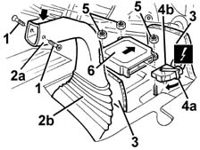
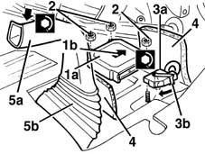
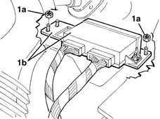
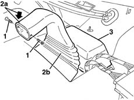
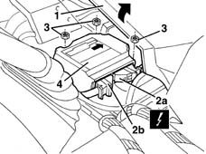
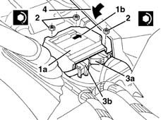

5580C14 AIR BAG ECU - R+R
- Path
- Procedures > 55 ELECTRICAL EQUIPMENT > 5580 SPECIAL ACCESSORIES > 5580C AIR BAG SYSTEM > 5580C14 AIR BAG ECU - R+R
- Kind
- repair procedure (removal / refitting; the operation number is the code)
- Applies to
- all engines; all production periods
- Interactive page
- https://sloeber94.github.io/elrnDB-fMltpl/en/#/2891971
Applies to: all engines; production: fino a 05/99, da 06/99 a 03/02
Applies to: all engines; production: fino a 05/99, da 06/99 a 03/02
 Removing
Removing
 Refitting
Refitting.
1. Undo the bolts fixing the duct.
2. Move the upper part of the duct (2a) backwards, taking advantage of the cover (2b) area.
3. Lift up the edges of the sound insulating carpet.
4. Rotate the safety bracket (4a) in the direction of the arrow and disconnect the electrical connection (4b).
 | Name | Connector |
|---|---|---|
4b | Air bag control unit |
5. Unscrew the nuts.
6. Remove the control unit.

Applies to: all engines; production: fino a 05/99, da 06/99 a 03/02
Refitting
RemovingFollow these precautions.
1. Position the control unit (1a).
Make sure that the arrow (1b) on the upper surface of the control unit is pointing in the direction of travel.
2. Tighten the nuts to the recommended torque.
 | Fastening | Component | Ø | Value (daNm) |
|---|---|---|---|---|
2 | Nut | AIR BAG CONTROL UNIT | M6 | 0.7 - 1.1 |
3. Connect the electrical connection (3a) and secure it by rotating the safety bracket (3b) in the direction of the arrow.
4. Reposition the edges of the sound insulation carpet.
5. Move the top part of the duct (5a) forwards, taking advantage of the cover (5b) area.

Applies to: all engines; production: fino a 05/99, da 06/99 a 03/02
Fasten the duct using the bolts.
.
Connect the battery.
Check the operation of the system using the Examiner or another tester.
Applies to: all engines; production: fino a 05/99, da 06/99 a 03/02
Applies to: all engines; production: da 09/03, da 04/02 a 08/03, da 06/04, fino a 05/04
Removing
Refitting.
1. Undo the nuts (1a) and move the multi-services control unit and support (1b).

Applies to: all engines; production: da 09/03, da 04/02 a 08/03, da 06/04, fino a 05/04
1. Undo the bolts fixing the duct.
2. Move the upper part of the duct (2a) backwards, taking advantage of the cover (2b) area.
3. Remove the protection

Applies to: all engines; production: da 09/03, da 04/02 a 08/03, da 06/04, fino a 05/04
1. Lift up the edge of the sound insulating carpet.
2. Disconnect the electrical connections (2a (2b).
| Name | Connector |
|---|---|---|
2a | Air bag control unit | M60A |
| Name | Connector |
|---|---|---|
2b | Air bag control unit | M60B |
3. Unscrew the nuts.
4. Remove the control unit.

Applies to: all engines; production: da 09/03, da 04/02 a 08/03, da 06/04, fino a 05/04
Refitting
RemovingFollow these precautions.
1. Position the control unit (1a). Make sure that the arrow (1b) on the upper surface of the control unit is pointing in the direction of travel.
2. Tighten the nuts to the recommended torque.
| Fastening | Component | Ø | Value (daNm) |
|---|---|---|---|---|
2 | Nut | AIR BAG CONTROL UNIT | M6 | 08 |
3. Connect the electrical connections (3a, 3b).
4. Reposition the edge of the sound insulation carpet.

Applies to: all engines; production: da 09/03, da 04/02 a 08/03, da 06/04, fino a 05/04
Place the protection in position.
Move the top part of the duct forwards, taking advantage of the cover area.
Tighten the shroud retaining bolts.
Place the multi-services control unit and support in position and tighten the nuts.
.
Connect the battery.
Check the operation of the system using the Examiner or another tester.